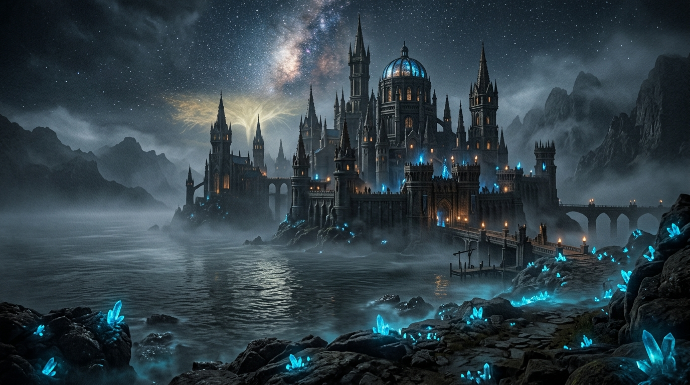

Chapter 4: The Dimming of Grace

Peace had finally come to the Lands Between.
The ancient dragons had sworn pacts with Godwyn the Golden. The sorcerers of the academy had laid down their glintstone staves after the joining of Radagon and Rennala. The giants were broken, and the stormwinds had subsided into gentle zephyrs.
The Golden Order was complete. The Erdtree cast its brilliant amber light over every corner of the empire.
Yet within the high chambers of Leyndell, Lord Godfrey sat upon his throne in total silence.
His greataxe rested against the gilded dais, gathering dust. The lion Serosh lay motionless upon his back, its breath slow and heavy. For months, Godfrey had searched the four horizons from the heights of the capital for a worthy adversary, a challenge that might awaken the slumbering thunder in his blood.
There was only silence.
And then, in a quiet moment in the First Church of Marika, the change occurred.
It did not happen with thunder or blood. It was as soft as an ember going cold beneath falling snow.
Godfrey blinked, and when his eyelids lifted, the world had lost its golden sheen.
The radiant luminescence that had bathed his vision for decades vanished. The divine aura of grace that pulsed through his veins—the gift of Queen Marika that bound him to the Erdtree—evaporated into the chill air.
His eyes, once filled with golden light, were now dull, dark, and clouded.
Beside him, his veteran warriors dropped their heads in shock. One by one, their eyes too dimmed. The gold abandoned them.
Then Queen Marika stood before her consort, her expression carved from emotionless marble.
“My Lord, and thy warriors. I divest each of thee of thy grace.
With thine eyes dimmed, ye will be driven from the Lands Between.
Ye will wage war in a distant land, where ye will live, and die.
Then, after thy death, that which I took from thee shall be returned.
Return to the Lands Between, wage war, and brandish the Elden Ring.”
Godfrey did not shout. He did not plead, nor did he raise his axe against his divine queen.
He understood. He had been chosen as a tool of conquest, a hammer to forge the foundation of an empire. Now that the empire was built, a barbarian king with a beast grafted to his flesh had no place in an era of pristine gold.
Godfrey slowly stood from his throne.
“We shall depart,” the Lord said, his voice deep and solemn. “And when the time cometh, we shall return.”